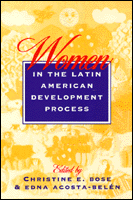

<body bgcolor="#FFFFFF" text="#000000" link="#0000FF" vlink="#CC0000" alink="#CC0000"><center><hr width="350" size="1" align="center" noshade>The role of gender and politics in the ever-changing goals and effects of development<hr width="350" size="1" align="center" noshade><p><a href="https://cdcshoppingcart.uchicago.edu/Cart/ChicagoBook.aspx?ISBN=9781566392921&&PRESS=temple" target="_top">Buy this book!</a> | <a href="https://cdcshoppingcart.uchicago.edu/Cart/Cart.aspx?PRESS=temple" target="_top">View Cart</a> | <a href="https://cdcshoppingcart.uchicago.edu/Cart/Cart.aspx?PRESS=temple" target="_top">Check Out</a></p><p></p></center><!--none//--><h1>Women in the Latin American Development Process</h1>
<h3>edited by Christine E. Bose and Edna Acosta-Belén</h3>
<P>cloth 1-56639-292-6 $83.50, Apr 95, <FONT COLOR=#990033>Out of Stock Unavailable</FONT>
<br>paper 1-56639-293-4 $33.95, Mar 95, <FONT COLOR=#990033>Available</FONT>
<BR> 304 pp
6x9
20&nbsp;tables
</P><p>This interdisciplinary volume provides a historical and international framework for understanding the changing role of women in the political economy of Latin America and the Caribbean. The contributors challenge the traditional policies, goals, and effects of development, and examine such topics as colonialism and women's subordination; the links to economic, social, and political trends in North America; the gendered division of paid and unpaid work; differing economic structures, cultural and class patterns; women's organized resistance; and the relationship of gender to class, race, and ethnicity/nationality.
<BR>&nbsp;<h2>Excerpt</h2><P>Excerpt available at <a href="http://www.temple.edu/tempress">www.temple.edu/tempress</a></p>
<BR>&nbsp;<h2>Reviews</h2>
<p><i>"Although the essays vary widely in the depth of their analysis, they disagree little on the significance of changes in society caused by the global economy and the participation of women in the public workplace."</i>
<br>&#151<b><i>The Hispanic American Historical Review</i></b>
<BR>&nbsp;<h2>Contents</h2><P>
<p>Preface
<br>Introduction &#150 Christine E. Bose and Edna Acosta-Belén
<p><b>Part I: From Colonization to Development and Industrialization: Gender and the Economy</b>
<br>1. Colonialism, Structural Subordination, and Empowerment: Women in the Development Process in Latin America and the Caribbean &#150 Edna Acosta-Belén and Christine E. Bose
<br>2. Gender, Industrialization, Transnational Corporations, and Development: An Overview of Trends and Patterns &#150 Kathryn B. Ward and Jean Larson Pyle
<br>3. Feminist Inroads in the Study of Women's Work and Development &#150 Luz del Alba Acevedo
<br>4. Recasting Women in the Global Economy: Internationalization and Changing Definitions of Gender &#150 M. Patricia Fernández Kelly and Saskia Sassen
<br>5. Gender, Industrialization, and Development in Puerto Rico &#150 Palmira N. Ríos
<p><b>Part II: Empowering Women: Individual, Household, and Collective Strategies</b>
<br>6. Latin American Women in the World Capitalist Crisis &#150 June Nash
<br>7. Gender and Multiple Income Strategies in Rural Mexico: A Twenty-Year Perspective &#150 Frances Abrahamer Rothstein
<br>8. Gender, Microenterprise, Performance, and Power: Case Studies from the Dominican Republic, Ecuador, Guatemala, and Swaziland &#150 Rae Lesser Blumberg
<br>9. Women's Social Movements in Latin America &#150 Helen Icken Safa
<br>10. Revolutionary Popular Feminism in Nicaragua: Ideologies, Political Transactions, and the Struggle for Autonomy &#150 Norma Stoltz Chinchilla
<p>About the Editors and Contributors
<br>Index
</P><BR>&nbsp;<H2>About the Author(s)</H2>
<table><tr><td valign="top"><img src="/tempress/authors/1068_au1.gif" height="90" width="75"></td><td width="100%" valign="middle"><p><b>Christine E. Bose</b> is Associate Professor of Sociology, Women's Studies, and Latin American and Caribbean Studies at the University at Albany, SUNY. She is also author of <I><A HREF="1305_reg.html" TARGET="_top">Women in 1900: Gateway to the Political Economy of the 20th Century</A></I> (Temple).</P></td></tr></table><table><tr><td valign="top"><img src="/tempress/authors/1068_au2.gif" height="90" width="75"></td><td width="100%" valign="middle"><p><b>Edna Acosta-Belén</b> is Distinguished Service Professor of Latin American and Caribbean Studies and Women's Studies and the Director of the Center for Latin American and Caribbean Studies and the Director of the Center for Latin American and Caribbean Studies at the University at Albany, SUNY.</P></td></tr></table>
<P>Contributors: Luz del Alba Acevedo, Rae Lesser Blumberg, Norma Stoltz Chinchilla, M. Patricia Fernandez Kelly, June Nash, Jean Larson Pyle, Saskia Sassen, Palmira N. Rios, Frances Abrahamer Rothstein, Helen Icken Safa,, Kathryn B. Ward, and the editors.</P>
<BR><H2>Subject Categories</H2>
<p><A HREF="/tempress/latin.html" TARGET="_top">Latin American/Caribbean Studies</a>
<BR><A HREF="/tempress/women.html" TARGET="_top">Women's Studies</a>
</p>
<p align="center"><a href="https://cdcshoppingcart.uchicago.edu/Cart/ChicagoBook.aspx?ISBN=9781566392921&&PRESS=temple" target="_top">Buy this book!</a> | <a href="https://cdcshoppingcart.uchicago.edu/Cart/Cart.aspx?PRESS=temple" target="_top">View Cart</a> | <a href="https://cdcshoppingcart.uchicago.edu/Cart/Cart.aspx?PRESS=temple" target="_top">Check Out</a></p><p><font face="Arial" size="1"><a href="copyright.html" onMouseOver="window.status='Web Copyright Policy';return true;" onMouseOut="window.status=''" title="Web Copyright Policy">&copy;</a> 2015 <a href="http://www.temple.edu" target="new" onMouseOver="window.status='Link to Temple University home page';return true;" onMouseOut="window.status=''" title="Link to Temple University home page">Temple University</a>. All Rights Reserved. http://www.temple.edu/tempress/titles/1068_reg.html</font></p>